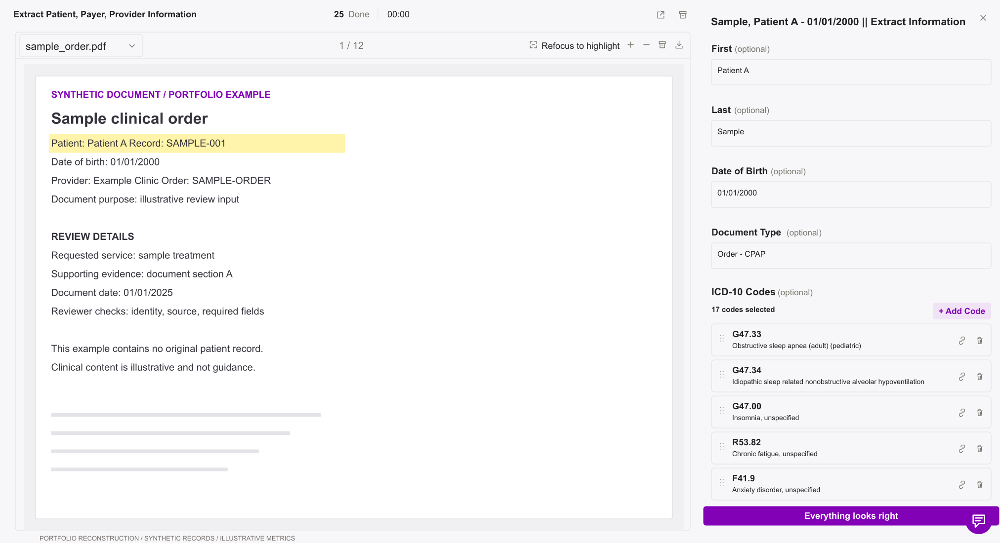
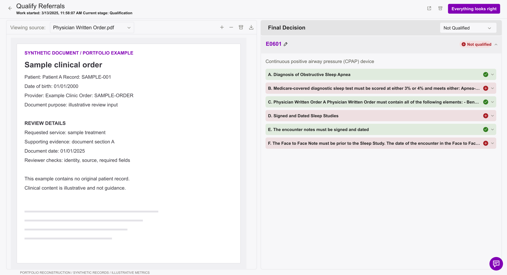
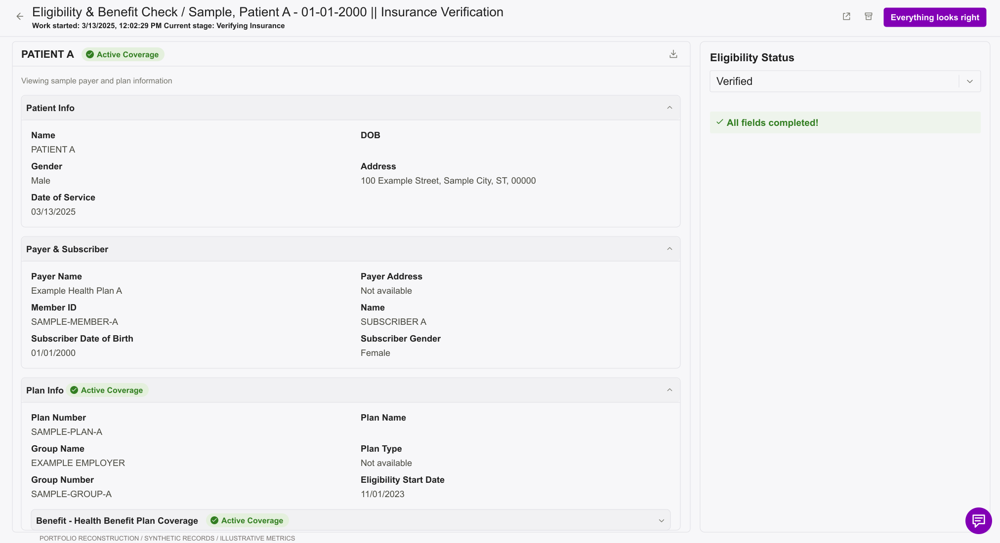

Healthcare & operations / Design case study
Helping people trust what happens next.
A healthcare review experience designed around three questions: where did this answer come from, what am I confirming, and what happens when the system cannot provide an answer?

The work behind the interface
I was the sole designer, working through focused testing, shadowing, and feedback from hospital technology and operations partners. My scope was the review experience within a larger set of healthcare workflows. Earlier BPO experience helped me recognize the cost of backtracking and unclear handoffs.
01 / Keep the evidence within reach
Reviewers repeatedly searched original documents to verify extracted values. I brought editable information and source material into one workspace, with references, highlighting, and refocus controls. Qualitative feedback indicated less searching and fewer interruptions.
{kind=link}
02 / Separate review completion from approval
An accurate “Not Qualified” result could still make reviewers hesitate over “Everything looks right.” I separated completing the review from approving the referral, using task-specific confirmation language such as “Confirm assessment.” A negative assessment can be correct and ready for handoff.
{kind=link}

03 / Preserve an unanswered question
An unsuccessful insurance lookup is different from a completed check with a negative result. I separated verification status from coverage outcome and worked through correction, retry, and manual verification with its source and time. The next person should understand what was actually checked.
{kind=link}

What I took forward
The effort of checking an answer is part of the AI experience. Reviewers need accessible evidence, an explicit decision to own, and a clear next step. Outcomes are qualitative; the numbers inside the reconstructed screens are illustrative.
ARTIFACTS & EVIDENCE
Explore the work.
Original design experience with qualitative outcomes. The public screens are static reconstructions using synthetic information, not production application code or measured performance results.
Figma files may require sign-in or permission. Public documentation remains available on GitHub .